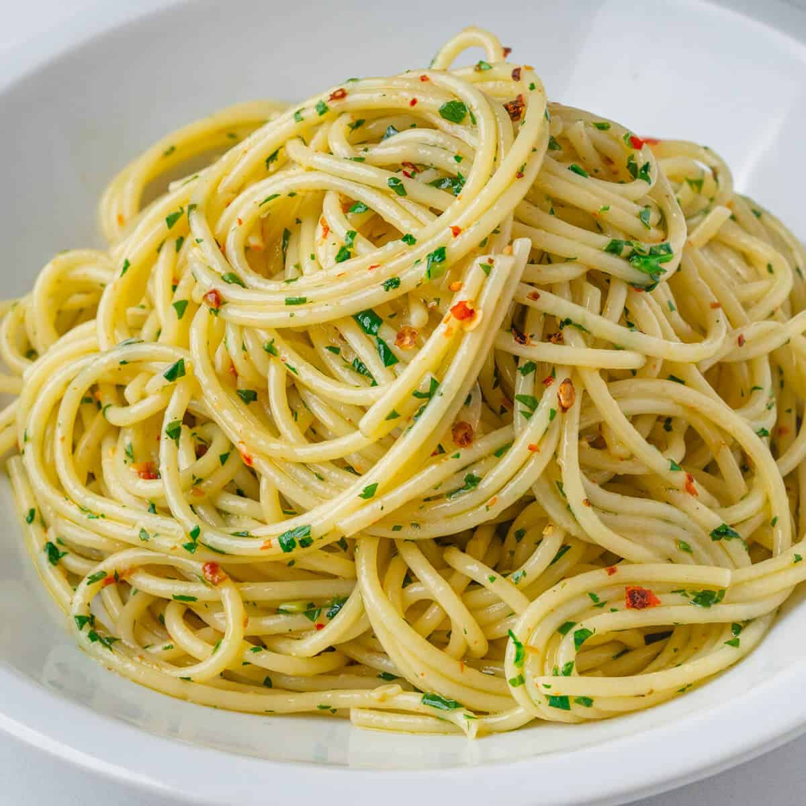

Aglio e Olio Recipe:

Description:
Aglio e olio is a deliciously simple Italian dish of fresh garlic, olive oil, and Parmesan cheese tossed with freshly cooked spaghetti
Ingredients:
- Garlic
- Olive oil
- Peperoncino
- Spaghetti
- Salt
- Parmagiano Reggiano
- Parsley
Steps:
- Gather all ingredients
- Bring a large pot of lightly salted water to a boil. Cook spaghetti in the boiling water, stirring occasionally until cooked through but firm to the bite, about 10 to 12 minutes. Drain and transfer to a pasta bowl.
- While the pasta is cooking, combine olive oil and garlic in a cold skillet.
- Cook over medium heat to slowly toast garlic, about 10 minutes. Reduce heat to medium-low when olive oil begins to bubble. Cook and stir until garlic is golden brown, about another 5 minutes. Remove from heat.
- Stir red pepper flakes, salt, and black pepper into pasta.
- Pour in hot olive oil and garlic, and sprinkle on Italian parsley and half of the Parmigiano-Reggiano cheese; toss until combined.